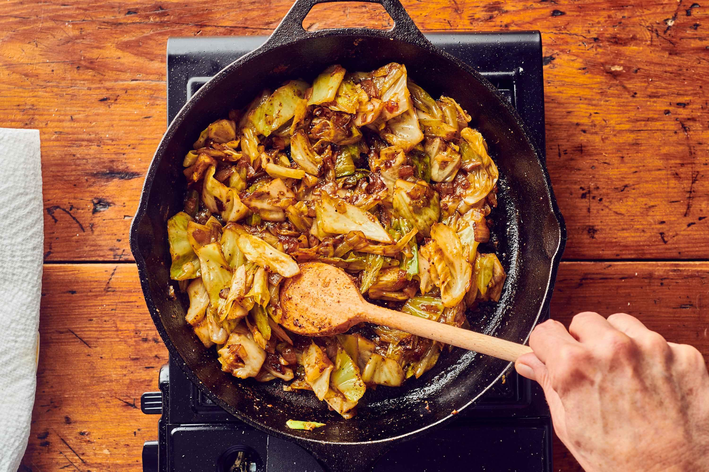

Dirty Cabbage

Description
This dirty cabbage is savory and slightly spicy—Cajun seasoning and andouille sausage do the heavy lifting by adding lots of aroma and heat. “Zesty” is a pretty great word for this!
Ingredients
- ½ tablespoon olive oil
- ½ pound lean ground sirloin beef
- ½ (12 ounce) package andouille sausage, sliced into rounds
- 1 ½ scallions, thinly sliced, plus more for garnish
- ½ medium red bell pepper, chopped
- ½ medium green bell pepper, chopped
- ½ celery rib, chopped
- 1 ½ cloves garlic, finely chopped
- 1 tablespoon tomato paste
- 1 tablespoon Cajun seasoning,such as McCormick®
- ½ small green cabbage, sliced 1/4-inch-thick
Steps
- Heat oil in a large Dutch oven over medium-high. Add ground beef; cook, stirring to crumble, until browned, about 7 minutes. Use a slotted spoon to transfer to a paper towel-lined plate.
- Add andouille sausage; cook, stirring often, until browned, about 5 minutes. Transfer to plate with beef.
- Reduce heat to medium; add scallions, red pepper, green pepper, and celery. Cook, stirring often, until softened, 5 minutes. Add garlic, tomato paste, and Cajun seasoning; cook, stirring constantly, until fragrant, about 1 minute. Stir in cabbage, ground beef, and sausage until fully incorporated. Stir in chicken broth and bring to a simmer over medium-high heat. Reduce heat to medium-low. Cover; cook, stirring occasionally, until cabbage is tender, 25 to 30 minutes.
- Stir in vinegar and salt. Garnish with scallions.
home